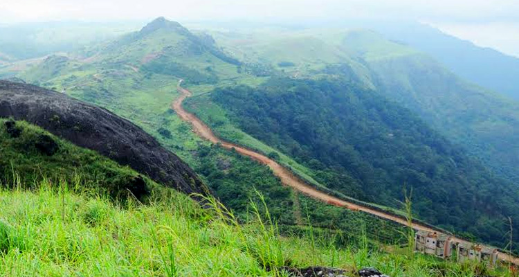

1.Vagamon
location
Vagamon, an enchanting hill station in Kerala situated 64 km from Pala is at an elevation of 1100 meter above sea level. Grass covered hills, deep valleys, beautiful meadows and the green tea plantations made it an ideal tourist spot. The tranquility and the cool climate of the place draws thousands of tourists to this hill region. Vagamon is a mark of religious harmony..
2. Kumarakom
location

Kumarakom is a cluster of little islands blessed with natural beauty and bliss. This stunningly beautiful land located on the Vembanad lake is dotted with plenty of traditional rice boats and canoes. Kumarakom offers you entertainment options like boating, fishing etc. It’s an ideal summer destination.
3. Pathiramanal
location

Pathiramanal is a small island that is easily accessible through the water way. The journey to this wonderful island itself is an exhilarating one. Located near Vembanad Lake in Kottayam district Pathiramanal is also called 'Sands of Night'. You will be amused by the sight of natural beauty. The island is home to some rare varieties of migratory birds making it a bird watcher's paradise.